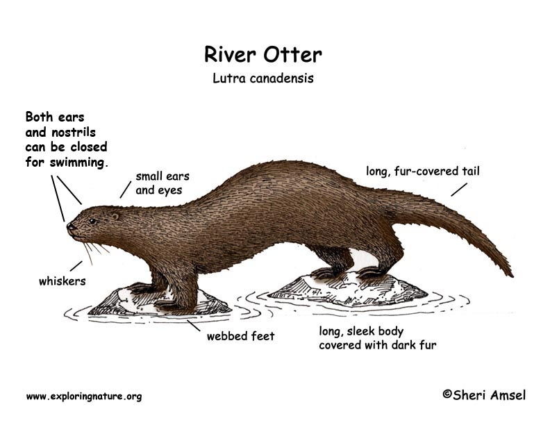

Marine mammals are mammals that rely on marine (saltwater) ecosystems for their existence. They include animals such as cetaceans (whales, dolphins and porpoises), pinnipeds (seals, sea lions and walruses), sirenians (manatees and dugongs), sea otters and polar bears. They are an informal group, unified only by their reliance on marine environments for feeding and survival. Marine mammal adaptation to an aquatic lifestyle varies considerably between species. Both cetaceans and sirenians are fully aquatic and therefore are obligate water dwellers. Pinnipeds are semiaquatic; they spend the majority of their time in the water but need to return to land for important activities such as mating, breeding and molting.
Sea Otters
The sea otter (Enhydra lutris) is a marine mammal native to the coasts of the northern and eastern North Pacific Ocean. Adult sea otters typically weigh between 14 and 45 kg (30 and 100 lb), making them the heaviest members of the weasel family, but among the smallest marine mammals. Unlike most marine mammals, the sea otter's primary form of insulation is an exceptionally thick coat of fur, the densest in the animal kingdom. Although it can walk on land, the sea otter is capable of living exclusively in the ocean. The sea otter inhabits nearshore environments, where it dives to the sea floor to forage. It preys mostly on marine invertebrates such as sea urchins, various mollusks and crustaceans, and some species of fish. Its foraging and eating habits are noteworthy in several respects. Its use of rocks to dislodge prey and to open shells makes it one of the few mammal species to use tools. In most of its range, it is a keystone species, controlling sea urchin populations which would otherwise inflict extensive damage to kelp forest ecosystems. Its diet includes prey species that are also valued by humans as food, leading to conflicts between sea otters and fisheries.
Dugong
The dugong is a marine mammal. It is one of four living species of the order Sirenia, which also includes three species of manatees. It is the only living representative of the once-diverse family Dugongidae; its closest modern relative, Steller's sea cow (Hydrodamalis gigas), was hunted to extinction in the 18th century. The dugong is the only sirenian in its range, which spans the waters of some 40 countries and territories throughout the Indo-West Pacific. The dugong is largely dependent on seagrass communities for subsistence and is thus restricted to the coastal habitats that support seagrass meadows, with the largest dugong concentrations typically occurring in wide, shallow, protected areas such as bays, mangrove channels, the waters of large inshore islands and inter-reefal waters. The northern waters of Australia between Shark Bay and Moreton Bay are believed to be the dugong's contemporary stronghold.
Polar Bear
The polar bear (Ursus maritimus) is a large bear native to the Arctic and nearby areas. It is closely related to the brown bear, and the two species can interbreed. The polar bear is the largest extant species of bear and land carnivore, with adult males weighing 300–800 kg (660–1,760 lb). The species is sexually dimorphic, as adult females are much smaller. The polar bear is white- or yellowish-furred with black skin and a thick layer of fat. It is more slender than the brown bear, with a narrower skull, longer neck and lower shoulder hump. Its teeth are sharper and more adapted to cutting meat. The paws are large and allow the bear to walk on ice and paddle in the water.